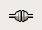

Zim
Dieser Artikel wurde für die folgenden Ubuntu-Versionen getestet:
Ubuntu 14.04 Trusty Tahr
Zum Verständnis dieses Artikels sind folgende Seiten hilfreich:
Zim  ist ein kleines Desktop-Wiki, welches als eigenständiges Programm läuft. Mit Zim ist es relativ einfach, Gedanken zu strukturieren, Ideen zu sammeln oder eine eigene Wissensdatenbank aufzubauen. Die Anwendung wurde ursprünglich in Perl geschrieben, später nach Python portiert (ab Ubuntu 10.04) und benutzt die GTK-Bibliothek, weswegen es besonders für GNOME oder Xfce geeignet ist. Zim läuft aber auch problemlos unter KDE, anderen Desktop-Umgebungen oder Windows.
ist ein kleines Desktop-Wiki, welches als eigenständiges Programm läuft. Mit Zim ist es relativ einfach, Gedanken zu strukturieren, Ideen zu sammeln oder eine eigene Wissensdatenbank aufzubauen. Die Anwendung wurde ursprünglich in Perl geschrieben, später nach Python portiert (ab Ubuntu 10.04) und benutzt die GTK-Bibliothek, weswegen es besonders für GNOME oder Xfce geeignet ist. Zim läuft aber auch problemlos unter KDE, anderen Desktop-Umgebungen oder Windows.
Installation¶
Die Installation [1] aus den offiziellen Paketquellen erfolgt über das Paket:
zim (universe)
 mit apturl
mit apturl
Paketliste zum Kopieren:
sudo apt-get install zim
sudo aptitude install zim
PPA¶
Die jeweils aktuelle Version ist über das "Personal Package Archiv" (PPA) [2] der Entwickler erhältlich.
Adresszeile zum Hinzufügen des PPAs:
ppa:jaap.karssenberg/zim
Hinweis!
Zusätzliche Fremdquellen können das System gefährden.
Ein PPA unterstützt nicht zwangsläufig alle Ubuntu-Versionen. Weitere Informationen sind der  PPA-Beschreibung des Eigentümers/Teams jaap.karssenberg zu entnehmen.
PPA-Beschreibung des Eigentümers/Teams jaap.karssenberg zu entnehmen.
Damit Pakete aus dem PPA genutzt werden können, müssen die Paketquellen neu eingelesen werden.
Nach dem Aktualisieren der Paketquellen erfolgt die Installation wie oben angegeben.
Fremdpaket¶
Von den ZIM-Entwicklern werden
DEB-Pakete  angeboten.
Die unterstützten Ubuntuversionen und Architekturen werden aufgelistet.
Nachdem man sie für die korrekte Ubuntuversion und Architektur geladen hat, müssen DEB-Pakete noch installiert werden.
angeboten.
Die unterstützten Ubuntuversionen und Architekturen werden aufgelistet.
Nachdem man sie für die korrekte Ubuntuversion und Architektur geladen hat, müssen DEB-Pakete noch installiert werden.
Hinweis!
Fremdpakete können das System gefährden.
Benutzung¶
Nach dem Starten [3] von Zim über das Anwendungsmenü erscheint ein Dialog, in dem man gebeten wird, ein "Notizbuch" auszuwählen oder zu erstellen. Möchte man diese Abfrage in Zukunft vermeiden kann man das "Informations-Symbol" (Tray Icon) Plugin aktivieren (siehe unten).
Alternativ lässt sich Zim auch per Befehl starten [2]:
zim /home/BENUTZERNAME/wiki/
Dabei wird der Pfad übergeben, in dem das eigene Wiki gespeichert ist.
Anlegen und Bearbeiten von neuen Seiten¶
Hat man ein Notizbuch erstellt, startet die Oberfläche von Zim mit der Startseite. Hier kann man direkt Text eintippen, und zwar genauso, wie man es von einem normalen Editor gewohnt ist. Wörter und Sätze können beliebig formatiert oder verlinkt werden. Des Weiteren können über die Tastenkombination Strg + 1 - 5 bzw. das Menü "Format" Überschriften unterschiedlicher Ebenen zugewiesen werden.
Um eine neue Seite zu erstellen kann man den "Springe zu.."-Dialog benutzen. Man erreicht den Dialog über das Menü "Gehe zu oder durch Drücken der Tasten Strg + J . Dort kann man dann den Namen der neuen Seite eintragen. Besteht bereits eine Seite mit dem gleichen Namen, öffnet Zim diese.
Mit dem Kalender (Klick auf ) kann man bequem eine Seite für ein Datum anlegen, die man z.B. als Tagebuchseite oder ToDo-Liste für den Tag verwenden kann.
Um eine Unterseite zu erstellen, kann man bei der Verlinkung die Syntax "Hauptseite:Unterseite" verwenden. Die neue Seite wird dann ähnlich wie in einem Dateimanager in einem Unterordner angezeigt. Einblenden kann man die Ordnerstruktur über die Taste F9 oder durch Klick auf das entsprechende Symbol "Zeige Index".
Verlinkung und spezielle Syntax¶
Um auf eine andere Seite im Wiki zu verlinken, genügt es das entsprechende Wort zu markieren und auf das Link-Symbol  zu  -klicken. Der markierte Textteil wird dann blau hinterlegt und die entsprechende Seite angelegt oder angezeigt. Um auf eine Webseite zu verlinken, reicht es, die Adresse einzutippen und mit
⏎ zu bestätigen oder aber ein bereits vorhandenen Link mit "
-klicken. Der markierte Textteil wird dann blau hinterlegt und die entsprechende Seite angelegt oder angezeigt. Um auf eine Webseite zu verlinken, reicht es, die Adresse einzutippen und mit
⏎ zu bestätigen oder aber ein bereits vorhandenen Link mit " -> Link bearbeiten" zu bearbeiten. Wichtig ist dabei, das
-> Link bearbeiten" zu bearbeiten. Wichtig ist dabei, das [http:// http://] - Protokoll bei der Eingabe nicht zu vergessen.
| Symbol: | Tastenkombination: | Formatierung: | |
 | Strg + B | Text fett | |
| Strg + I | Text kursiv | ||
| Strg + U | Text unterstrichen | ||
| Strg + K | Text durchgestrichen | ||
| Strg + 0 | Formatierung entfernen |
CamelCase und Backlinks¶
Noch einfacher geht die Verlinkung über die "CamelCase"-Syntax. Zim verlinkt Seiten automatisch, wenn es im Text diese im Format SeitenName (also eine Verbindung aus zwei Worten, beide Anfangsbuchstaben groß geschrieben) findet. Dieses Verhalten lässt sich im Einstellungsdialog unter "Bearbeiten -> Einstellungen -> Editing" abstellen.
Mithilfe von "Backlinks" ist es möglich, bestimmte Seiten zu taggen. Dazu schreibt man in eine Wikiseite ein Link zu einer Ursprungsseite im Format :Seite . Wenn man zum Beispiel eine Seite "ToDo" hat, und einen bestimmten Artikel noch als zu bearbeiten markieren möchte, schreibt man in diesem die Verlinkung :ToDo . Zim erstellt dann automatisch einen Backlink auf die "ToDo"-Seite und auf dieser ebenfalls eine Übersicht aller zu erledigenden Aufgaben.
Seiten und Inhalte suchen¶
Zim kann den ganzen Index und den Inhalt der einzelnen Seiten nach Worten oder Textpassagen suchen. Die Suche findet man im Menü unter "Suchen -> Suchen..." ( ⇧ + Strg + F ) Des Weiteren kann auch die aktuell angezeigte Wikiseite durchsucht oder gefundene Textzeilen ersetzt werden, diese Optionen findet man ebenfalls im Menü "Suchen -> Suchen" ( Strg + F ) bzw. "Ersetzen" ( Strg + H ).
Anpassung und Konfiguration¶
Tableiste anpassen¶
Zur besseren Übersichtlichkeit bei versteckter Ordnerstruktur lohnt es sich evtl, unter "Ansicht -> Pfadleiste" die Option auf "Namensraum" zu setzen. Zim zeigt dann in der Tab-Leiste nur noch die übergeordneten Wiki-Seiten an, statt eine komplette Liste der zuletzt angeklickten Einträge.
Plugins einrichten¶
Des Weiteren verfügt Zim über Erweiterungen (Plugins), mit denen man z.B. eine deutsche Rechtschreibkontrolle einschalten, eine Wiki-Seite in einem Browser öffnen oder das Programm in den Systemtray minimieren kann. Diese Plugins findet man unter "Bearbeiten -> Einstellungen -> Plugins". Nach der Aktivierung eines Plugins muss Zim neu gestartet werden.
Rechtschreibprüfung während der Eingabe¶
Damit die deutsche Rechtschreibkorrektur funktioniert, müssen folgende Pakete installiert sein [1]:
python-gtkspell (ab Ubuntu 10.04)
mit apturl
Paketliste zum Kopieren:
sudo apt-get install python-gtkspell
sudo aptitude install python-gtkspell
Trayicon¶
Das "Informations-Symbol" (Tray Icon) Plugin erlaubt es, Zim beim Schließen des Fensters in den Systemtray zu "verbannen", statt es ganz zu beenden. Es empfiehlt sich, das klassische Verhalten statt dem Ubuntu-Verhalten zu konfigurieren. Solange nur ein Notizbuch (versteckt) geöffnet ist, öffnet das Icon dann direkt dieses Notizbuch mit einem einfach Klick auf das Symbol, statt ein Menü mit allen vorhandenen Notizbüchern zu öffnen.
Wiki-Seite im Browser öffnen¶
Nach Aktivierung des Plugins "PrintToBrowser" bzw. "Druck in HTML-Datei" kann man eine beliebige Wiki-Seite bequem über "Datei -> Druck in HTML-Datei" HTML-formatiert in einem Browser-Fenster ausgeben.
Daten weitergeben¶
Da Zim-Wiki Daten aus einem Verzeichnisbaum mit einfachen Textdateien und den angehängten Dateien bestehen, kann man den Wiki-Ordner ganz einfach kopieren oder freigeben, z.B. für Freunde und Bekannte, so dass diese auf die "Wissensdatenbank" zugreifen können. Am bequemsten ist der Zugriff natürlich mit installiertem Zim, es geht aber auch mit jedem Dateimanager und einem Texteditor. Falls nur Lesezugriff gewünscht ist, kann man die Wiki Seiten auch als HTML-Datei anbieten, dann können die Seiten auch ohne Zim anständig formatiert angezeigt werden. Dazu entweder unter "Datei -> Exportieren..." einen Zielordner angeben in dem die Webseiten gespeichert werden sollen, oder das Wiki mit "Werkzeuge -> Webserver starten" ins lokale Netz stellen. In HTML exportierte Wikis sind mit jedem Browser anzeigbar und mit einem HTML Editor ggf. auch einigermaßen bearbeitbar. So einfach wie mit Zim können die HTML-Seiten aber natürlich nicht mehr bearbeitet werden.
Notizen aus anderen Programmen importieren¶
Um Notizen z.B. von Tomboy oder Newton zu importieren, gibt es auf der Webseite des Projekts zwei Skripte, die diese Aufgabe übernehmen. Diese werden heruntergeladen und in ein neues Verzeichnis kopiert. Dann macht man die Skripte ausführbar [4].
Danach startet man die Skripte unterschiedlich. Um das Tomboy2Zim-Skript zu starten, genügt folgender Befehl [5]:
python ./tzim.py
Das Newton2Zim-Skript wird mit
sh ./newton2zim.sh
gestartet. Die konvertierten Notizen bzw. Wikis können nun über den "Notizbuch öffnen"-Dialog hinzugefügt werden.
 - Übersichtsseite
- Übersichtsseite- Erstellt mit Inyoka
-
 2004 – 2017 ubuntuusers.de • Einige Rechte vorbehalten
2004 – 2017 ubuntuusers.de • Einige Rechte vorbehalten
Lizenz • Kontakt • Datenschutz • Impressum • Serverstatus -
Serverhousing gespendet von